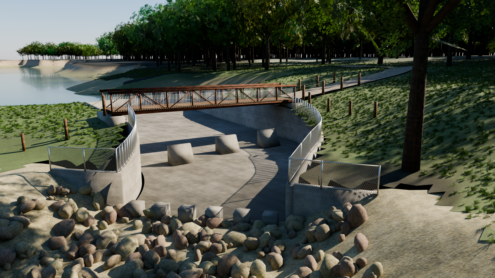
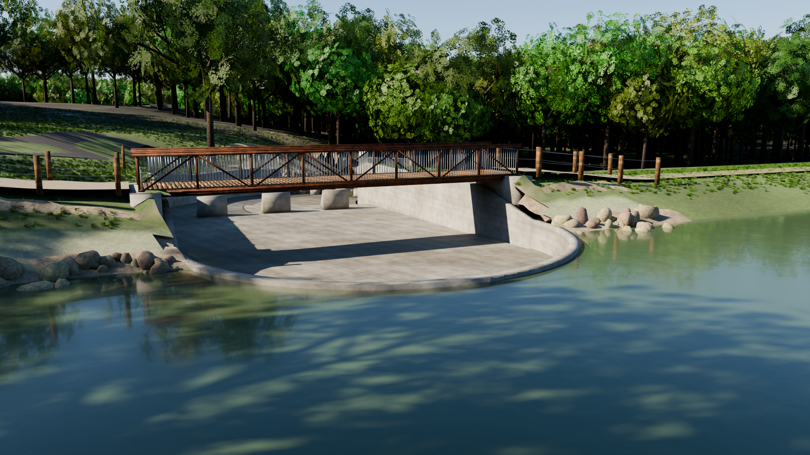
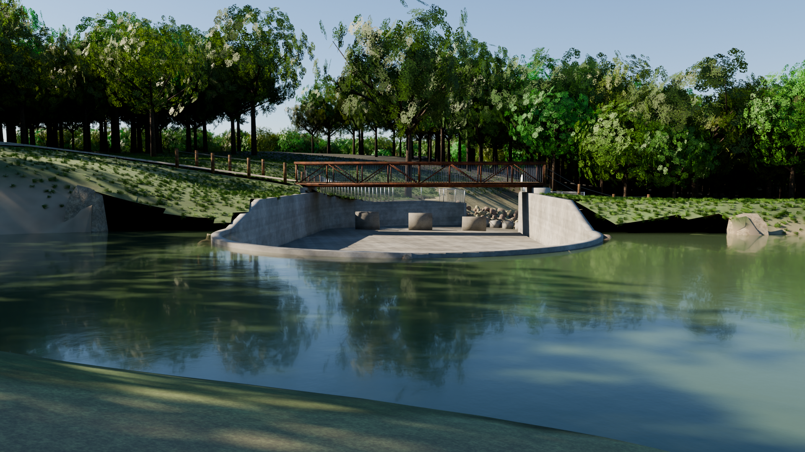
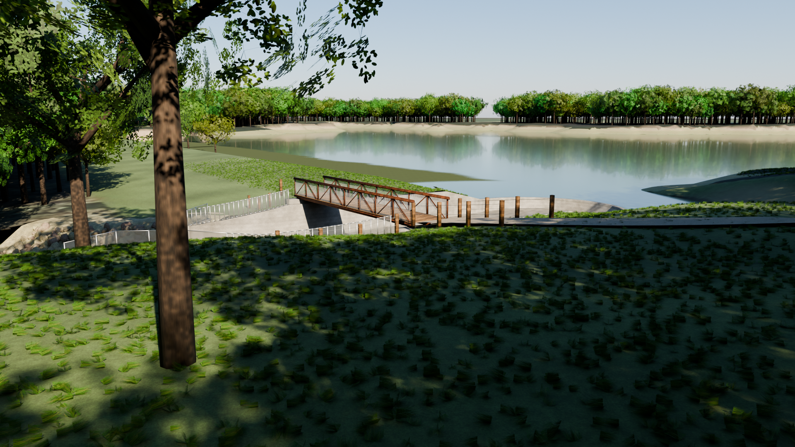
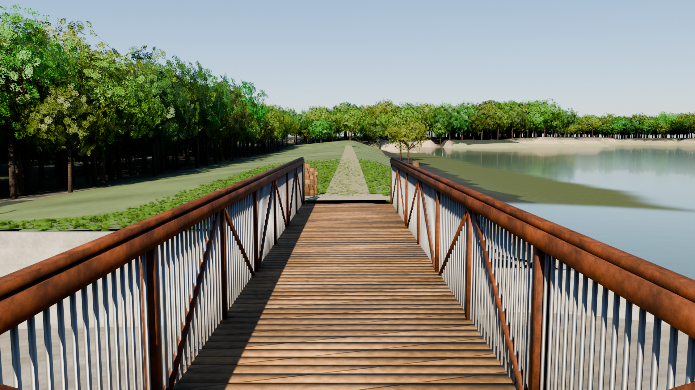
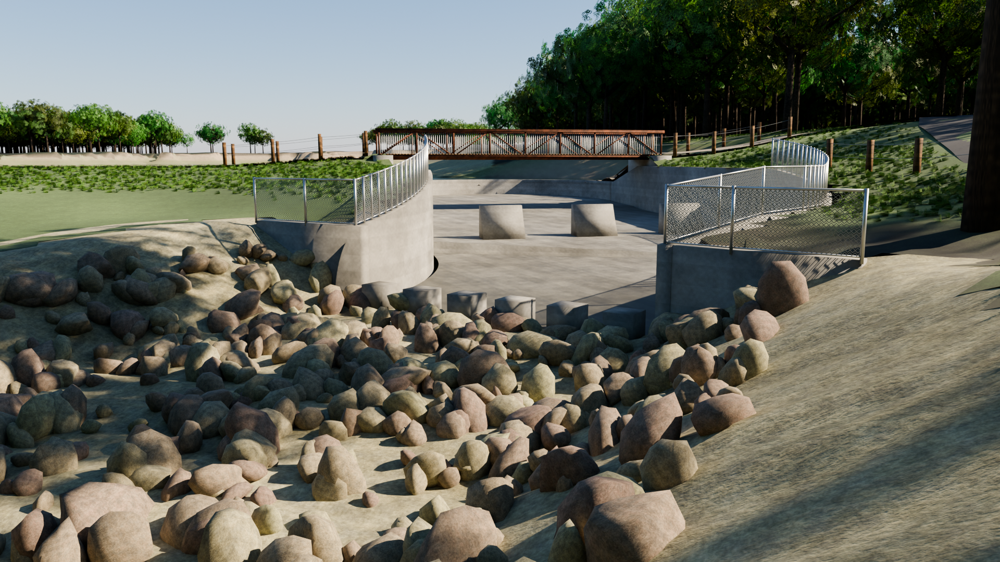
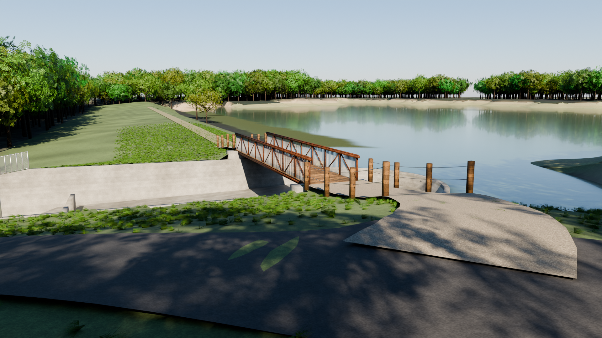
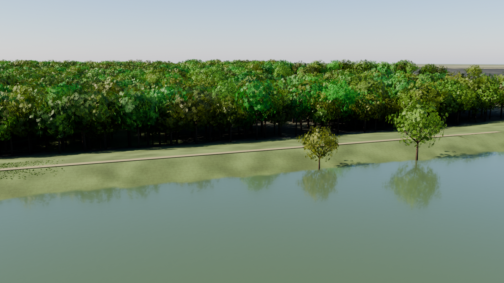
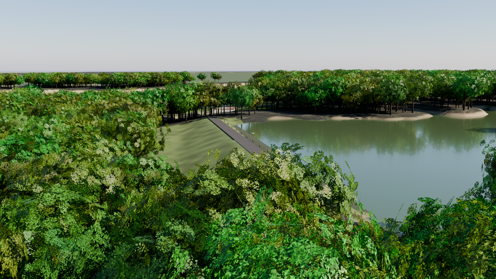
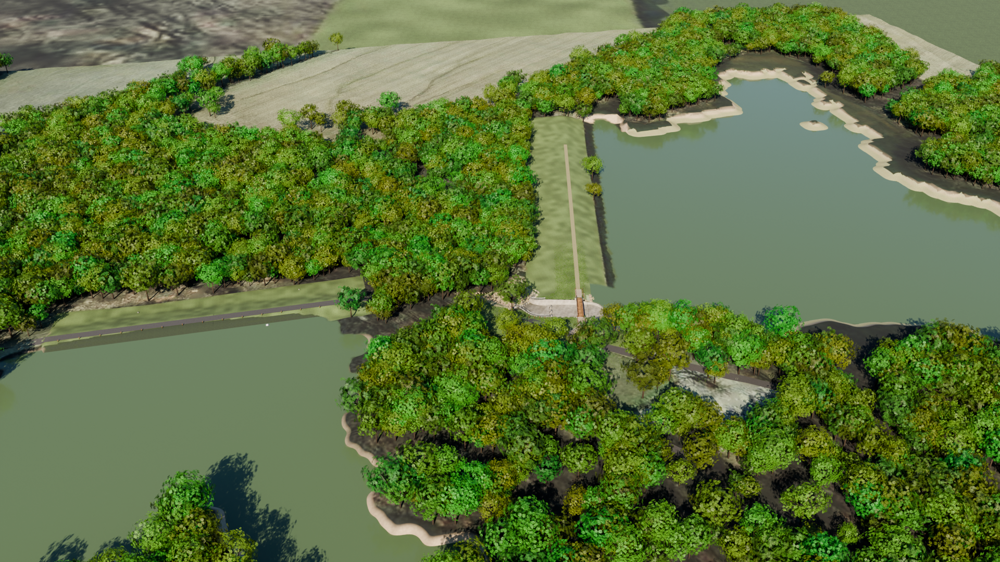

Indiana DNR Project E015001L, White Oak State Fishing Area, Knox County, Indiana. The Dam No. 1 drop spillway, pedestrian bridge, riprap outlet and Dam No. 2 rebuilt in Blender from the September 2013 bid set and rendered with Cycles.










The 360° tour is six equirectangular panoramas rendered with Cycles at 3072×1536 from eye height on the bridge, the stone walkway, the lake shore, the outlet channel, the Dam No. 1 crest and the Dam No. 2 drive. Drag to look around and click the markers to walk between viewpoints. It is the same Blender scene as the renders above, so what you see is the path-traced image rather than the real-time approximation in the 3D viewer. The 3D viewer also has a path tracing on your GPU switch that renders the live scene with physically based path tracing in the browser: free navigation and Cycles-like light transport, converging over a few seconds while the camera is still (desktop GPU recommended).
Everything in the scene is generated by blender/build_scene.py with Blender 5.2 as a Python module: the terrain from the 16-bit heightmap derived from the aerial and contour data, the spillway walls, slab, weir, baffles and bridge from the plan and section dimensions, 1,750 individually placed limestone rocks, 7,936 procedural trees with leaf-card canopies, 42,000 scattered grass clumps and a physically based Nishita sky. The interactive viewer loads the same scene exported to glTF (meshopt-compressed) and instances the trees and rocks on the GPU.
| Element | Value | Sheets |
|---|---|---|
| Overflow weir | Semicircular, 20.5 ft inside radius, crest EL 477.0, 1 ft thick | 7, 27, 29 |
| Spillway walls | 1 ft thick, top EL 480 → 477 → 476, bottom EL 466–467 | 27, 28, 29 |
| Floor slab | 24 / 18 / 12 in., EL 473.46 → 472.0 → 470.0, curved R 35.5 / 31.5 ft | 27, 28 |
| Baffle / end-sill blocks | 3 baffles 3 ft 9 in. high; 6 end sills 2 × 2 × 1 ft 9 in. | 27, 29, 30 |
| Pedestrian bridge | 46 ft clear span, 8 ft wide steel truss, deck EL 482.0 | 30 |
| Outlet channel | 24 in. Class I riprap, invert EL 470 → 466, 23 → 40 ft wide, 2:1 sides | 10, 11 |
| Dam No. 1 / No. 2 | Crest EL 480 (10:1 downstream) / crest EL 495 (3:1), 48 in. CMP riser EL 490.31 | 12–24 |
| Pool levels | Lake 1 EL 477.0 (lowered from 482.4), Lake 2 EL 490.4 | 7, 19 |